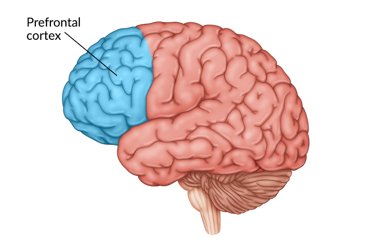
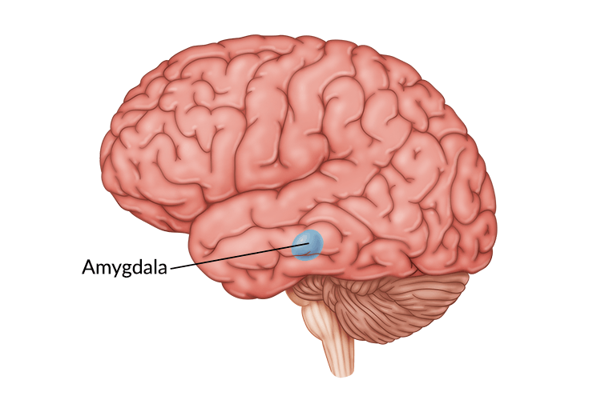

Stop, Drop, And Think
Teens: your brain is changing.
As your develop into an adult, the brain undergoes many changes to mature.
You may exhibit more impulsive and aggressive behaviour such as mis-reading social cues and emotions, getting in fights, partake in risky behaviour, and not think before acting.
This is primarily a biological cause, however, you still definitely can make good choices and think things through.
Don't Take Our Word, Take Science's
The pre-frontal cortex is located at the front of the brain and is responsible for much of the logical and rational decision making.
In teens, this region is still under development.
The amygdala, howerver, is more developed during teen years than the pre-frontal cortex. It is responsible for emotional responses.
This causes teens to think more with their emotions than their heads. It's not their fault, but it's important to acknowledge this fact.
Parents, It's Your Job To Help
As your child's most impactful adult in their live's. You're their role modal. The way you behave will have significant impacts on the rest of your child's life.
You can help make sure your teen makes the right decisions. From Standford Medicine:
- Discussing the consequences of their actions can help teens link impulsive thinking with facts. This helps the brain make these connections and wires the brain to make this link more often.
- Remind your teens that they’re resilient and competent. Because they’re so focused in the moment, adolescents have trouble seeing they can play a part in changing bad situations. It can help to remind them of times in the past they thought would be devastating, but turned out for the best.
- Become familiar with things that are important to your teens. It doesn’t mean you have to like hip-hop music, but showing an interest in the things they’re involved in shows them they’re important to you.
- Ask teens if they want you to respond when they come to you with problems, or if they just want you to listen.
Most parents' first thought is to attempt to jump into their child's life with advice to try and fix their problems or place blame. However, this often can lead to the child being less open with their parent's in the future.
Ensure you make it emotionally safe and easy for them to come to you, and it is likely they will when in need and you can be part of their lives in the future.
References
- https://www.aacap.org/AACAP/Families_and_Youth/Facts_for_Families/FFF-Guide/The-Teen-Brain-Behavior-Problem-Solving-and-Decision-Making-095.aspx
- https://www.nimh.nih.gov/health/publications/the-teen-brain-7-things-to-know
- https://www.stanfordchildrens.org/en/topic/default?id=understanding-the-teen-brain-1-3051